Fondamenti di Comunicazione e Internet
Appunti per il corso Fondamenti di Comunicazione e Internet del Politecnico di Milano, Anno Accademico 2020/2021.
Creati da Mario Merlo. Se apprezzate il lavoro, mettete una stellina alla repository.
Licenza
Appunti A.A. 2020/21 Fondamenti di Comunicazione e Internet by Mario Merlo is licensed under CC BY-NC 4.0


Indice
- /Panoramica sul corso
- /Introduzione al corso
- /Elementi di Internet
- /Modelli funzionali e architetture a livelli
- /Commutazione
- /Parametri di prestazione
- /Livello fisico
- /Applicazioni di rete
- /Il servizio di Web Browsing
Panoramica sul corso
- Professor Francesco Musumeci
- DEIB, edificio 20, Complesso Leonardo, Terzo piano
- francesco.musumeci@polimi.it (Inserire \#FCI nell’oggetto)
- Materiale del corso su Beep
- Sito: musumeci.faculty.polimi.it
- Ricevimento per appuntamento: online o in ufficio
- Professor Ayoub Omran
- Professor Tornatore Massimo
Materiale didattico
- Testo di riferimento: Achille Pattavina, Internet e Reti - Fondamenti, Seconda edizione, internetereti.it
- Slide e lezioni
- Video di approfondimenti, esercizi e strumenti
- Esercizi svolti e temi d’esame precedenti
- Materiale a supporto del laboratorio
Tutto il materiale è disponibile su Beep
Programma del corso
Esercitazioni in presenza e online.
Flipped classroom: brevi video sugli argomenti con discussione in classe.
Laboratorio
- Sniffer di rete (Wireshark)
- Ping, Traceroute, Strumenti del browser, Dig, DNSLookup
- Protocolli applicativi
Hands-on
- Python e scripting per analisi di rete
- Programmazione socket in Python
- Configurazioni e simulazione di rete (Packet Tracker)
- Attività sperimentali
Tre fasi per ogni laboratorio
- A casa: studio di materiale di base
- In aula: esercizi hands-on con tutor
- In aula o a casa: autovalutazione del lavoro confrontandolo con la soluzione proposta
Organizzazione del corso
- 50 ore di lezione circa
- 30 ore di esercitazione circa
- 18 ore di laboratorio
Il laboratorio è online ed è necessario il proprio PC.
Il venerdì ci sarà lezione solo se necessario.
Esame
Quattro mini prove in itinere:
- 19 Marzo
- 23 Aprile (include la prima parte di laboratorio)
- 21 Maggio
- 11 Giugno (da confermare; include la seconda parte di laboratorio)
Esame scritto:
- Esercizi simili a quelli visti a lezione ed esercitazione
- Domande (teoriche o in forma di esercizio breve)
- Massimo 26/27 punti
Valutazione del laboratorio: esercizi di laboratorio in forma scritta, massimo 6 punti.
Possibilità bonus con Quiz (circa sei durante l’anno).
Non è possibile congelare il voto o porzioni di voto, iscrivendosi ad un appello si rifiutano automaticamente le valutazioni precedenti.
Orale solo a discrezione del docente.
Introduzione al corso
Scopo del corso: fornire le conoscenze fondamentali sul funzionamento della rete tra calcolatori.
Cenni storici
Prima di internet
Applicazioni isolate:
- Elaborazioni isolate
- Scambio di dati a mano (schede perforate, nastri, floppy…)
Reti di TLC isolate:
- Reti dedicate ai servizi
- Nessuna elaborazione
La nascita di Internet
La nascita di Internet si fa risalire agli anni ’60 per vari eventi:
- 1961: Kleinrock, dimostra l’efficacia della commutazione di pacchetto grazie alla teoria delle code
- 1967: Lawrence Roberts progetta ARPAnet (Advanced Research Projects Agency), prima rete di computer interconnessi per i militari americani
- 1969: primo nodo di IMP (Interface Message Processor) di ARPAnet all’UCLA
Negli anni ’70 si sviluppa ancora di più il concetto di Internet:
- 1970: ALOHAnet, rete radio a pacchetti dell’università delle Hawaii
- 1972: Nasce NCP (Network Control Protocol), il primo vero protocollo di internet. Nasce anche il primo programma di posta elettronica e ARPAnet si espande a 15 nodi
- 1974: Cerf e Kahn definiscono i principi dell’internetworking
- 1976: Nasce Ethernet nei laboratori di Xerox
- 1979: ARPAnet si espande a 200 nodi
Anni ’80:
- 1982: definizione protocollo SMTP
- 1983: rilascio dello stack di protocolli TCP/IP (sostituisce NCP). Viene anche definito il DNS.
- 1985: definizione protocollo FTP
- 1988: controllo della congestione TCP
Nascono nuove reti nazionali come Csnet, BITnet, NSFnet…
Ci sono ora più di 100000 host collegati.
Anni ’90:
- 1990: ARPAnet viene dismessa
- 1991: NSF lascia decadere le restrizioni sull’uso commerciale di NSFnet
- Primi anni ’90: Tim Berners-Lee inventa il World Wide Web al CERN di Ginevra
- 1994: Browser internet: Mosaic e Netscape
- Fine anni ’90: commercializzazione del web
Cosa significa oggi sviluppare un'applicazione
Oggi, scrivere un’applicazione di rete comporta una serie di passi complessi:
- Scrivere le componenti server
- Inserirle in macchine virtuali
- Istanziarle su un servizio cloud
- Scrivere le componenti client per le diverse piattaforme
- Inserirle nei relativi store online
- Aspettare che gli utenti scarichino le applicazioni
Controllare la relazione con la rete è fondamentale. È ormai fondamentale saper gestire sia la parte di sviluppo software che di sviluppo rete per gestire correttamente un nuovo software.
Elementi di Internet
Cos’è Internet?
- Un insieme di componenti fisiche
- Milioni di computer connessi alla rete chiamati host (terminali)
- Tutti gli host sono sistemi in grado di inviare e ricevere informazioni per le loro applicazioni finali. Hanno caratteristiche molto diverse
- Nodi di rete chiamati router (nodi). Altri nodi di rete sono switch, access point, modem…
- I principali sono i router, che operano su unità informatiche di dimensioni finite dette pacchetti. Esistono altri nodi di rete che a livello locale svolgono altre funzioni di collegamento
- Canali di comunicazione di diversi tipi (fibra, cavo, radio, satellite…) chiamati link (collegamenti)
- I collegamenti possono essere di natura fisica molto diversa. Differiscono anche per tecnologia di trasmissione dell’informazione. La velocità di trasmissione è misurata in bit/s e suoi multipli
- Interconnesse gerarchicamente
- Un’architettura di rete
- Rete di accesso: tecnologie che permettono agli utenti finali di connettersi all’ISP (Internet Service Provider). Tipicamente si tratta di un router.
- Storia dei mezzi di accesso ad Internet
- Dial-Up Modem
- 56kbps
- Accesso diretto al router dell’ISP mediante circuito telefonico
- Trasmissione del segnale in banda telefonica (fino a 4kHz)
- ADSL (Asymmetric Digital Subscriber Line)
- Fino a 1Mbps upstream, 20Mbps downstrsam
- Condivisione del doppino con la rete telefonica fino alla centrale (divisione di frequenza)
- Accesso al router del provider mediante rete dati ad alta velocità
- Fibra ottica
- FTTH (Fiber to the home)
- FTTB (Fiber to the basement)
- FTTC (Fiber to the curb)
- FTTN (Fiber to the neighborhood)
- Reti cellulari
- GPRS/EDGE, circa 200kbps
- HSPA, circa 14,5Mbps down, 5,7Mbps up
- LTE, 300Mbps down, 85Mbps up
- Wireless LAN
- Accesso condiviso radio (wireless) attraverso stazione base o punto d’accesso
- Standard 802.11 bgnY/ac (Wi-Fi): 11/54/300/1000 Mbps
- Internet è un puzzle di tante reti interconnesse. Questo ha due risvolti importanti:
- La tecnologia di Internet (IP - Internetworking Protocol) può essere usata per interconnettere sotto-reti di tipo eterogeneo
- L’intera rete Internet mondiale è composta da tante reti gestite da operatori diversi (ISP) che si accordano per collegarle
- Le diverse porzioni di rete sono composte da tecnologie diverse ed esistono anche sotto-reti che gestiscono internamente propri nodi e link
- Classificazione di reti in base all’estensione geografica
- LAN (Local Area Network): impiegate in aree limitate (casa, campus, azienda)
- MAN (Metropolitan Area Network): coprono estensioni di alcune decine di chilometri
- WAN (Wide Area Network): copertura ampia a piacere
- Ci sono ISP specializzati per specifici segmenti di rete:
- Tier 1: hanno clienti solo altri ISP e operano WAN intercontinentali
- Tier 2: ISP di estensione nazionale o regionale
- Tier 3: ISP locali che hanno come clienti gli utenti finali
- I collegamenti tra ISP dello stesso tipo vengono chiamati Peering Link. Servono a scambiare traffico tra ISP.
- Architettura di interconnessione

- Architettura dei Neutral Access Point
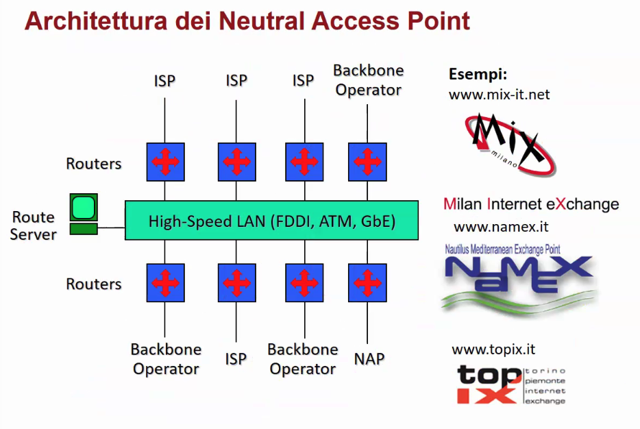
- Un servizio di comunicazione usato dalle applicazioni ed i protocolli di comunicazione tra le componenti del sistema
- Le componenti fisiche e l’architettura supportano diversi servizi di comunicazione
- Protocolli di comunicazione: insieme delle regole per formattare, inviare e ricevere messaggi
- Il servizio di trasporto offerto dalla rete alle applicazioni può essere di vari tipi, in funzione della qualità del servizio (QoS) richiesta:
- possono essere trasportati brevi messaggi in modo non affidabile
- possono essere trasportate sequenze anche lunghe di byte in modo affidabile
- Le applicazioni richiedono alla rete di fornire il servizio più appropriato mediante apposite interfacce di programmazione: le API (Application Programming Interface)
- Laboratorio: Socket programming: come usare Python per accedere all’interfaccia software sia lato client che lato server per il trasporto affidabile TCP e non affidabile UDP
- Tipici parametri di QoS:
- Ritardo
- Traffico trasportato (throughput)
- Probabilità di perdita
- Tempo reale
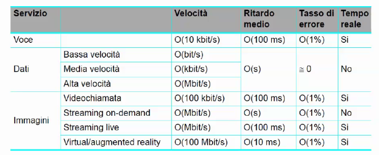
- Tramite i protocolli, la rete può fornire un servizio di comunicazione alle applicazioni, ovvero il servizio di trasferimento delle informazioni tra i processi remoti
- L’architettura dei protocolli in Internet è organizzata in una struttura a livelli, ognuno dei quali può assumere un valore al servizio
- Protocolli di comunicazione: due modelli
- Modello client/server
- Modello peer-to-peer
- La rete che trasporta i dati non fa distinzione tra i modelli
Modelli funzionali e architetture a livelli
Servizio di comunicazione
Si considerano due nodi (A e B), in due zone geografiche differenti, che vogliono comunicare. Il servizio di comunicazione è ciò che i due nodi utilizzano per trasportare l’informazione da A a B, ossia è il fornitore del servizio di trasporto dell’informazione.
Esempi:
- Il servizio postale
- Servizi di online gaming
Il servizio di trasferimento può trasportare diversi tipi di informazioni (flussi audio, video, messaggi applicativi, pacchetti, bit).
Primitive di servizio
Il servizio di comunicazione può essere descritto mediante delle chiamate di servizio, chiamate primitive di servizio. In generale, servono a descrivere il servizio, a richiederlo ed a ricevere le informazioni sul servizio dal fornitore. Sono caratterizzate da parametri quali:
- Informazione da trasferire
- Indicazione del destinatario
- Caratteristiche del servizio richiesto
Caratteristiche del servizio di comunicazione
Modalità a connessione:
- Instaurazione della connessione
- Trasferimento dell’informazione
- Rilascio della connessione
Modalità senza connessione: una sola fase: trasferimento dell’informazione
Protocollo di comunicazione
Insieme di regole che gestiscono il colloquio tra entità. Riguarda:
- Il formato dei messaggi
- Le informazioni di servizio
- Gli algoritmi di trasferimento
Quando due entità colloquiano tra loro, sono dette di pari livello.
Packet Data Units (PDU)
Unità di trasferimento delle informazioni, tipicamente una sequenza di bit. Possono contenere sia dati dell’informazione da trasferire, sia informazioni di servizio. La PDU ha un formato specifico. È formata da due parti:
- Header: contiene le informazioni di servizio
- Dati: informazione da trasferire
Livelli
Se le entità sono in grado di colloquiare tra loro, possono offrire loro stesse un servizio di comunicazione ad un livello superiore. Le entità di livello superiore possono sfruttare il servizio di comunicazione costruito sui nodi del livello inferiore per scambiarsi dati. Il livello più basso si definisce livello fisico.
Il servizio di comunicazione è più ricco grazie all’implementazione di funzioni sui vari livelli.
Architettura a livelli
I servizi più complessi possono essere articolati a livelli, da un livello che garantisce solo il trasporto dei bit ad un livello dove sono definiti complessi servizi caratterizzati da molti parametri e funzionalità. Nel caso di internet, i livelli sono cinque:
- Livello 5: busta di livello 5: vengono inseriti l’header e le informazioni che vogliamo inviare
- Livello 4: prendiamo la busta di livello 5 e la inseriamo nella busta di livello 4: i dati del nuovo pacchetto sono header e contenuto del pacchetto
- Livello 3: stesso processo
- Livello 2: stesso processo
- Livello 1: trasferimento fisico delle informazioni da un nodo all’altro
Nel nodo opposto, le regole del protocollo vengono interpretate. Effettivamente si aprono le buste mano a mano che si sale nella pila di protocolli.
Perché un’architettura a livelli?
Serve a consentire di svolgere una serie di funzioni separandole a livelli diversi. La separazione è utile perché la complessità nell’implementazione delle diverse funzioni può essere relegata a livelli diversi. Separare i livelli consente una modularità di implementazione che possono essere affidati a parti hardware diversi o a sviluppatori software diversi.
Modello a livelli di internet (TCP-IP)
- Livello più alto: livello applicativo (Application). Le PDU di questo livello vengono chiamati messaggi (Messages). È il livello usato dalle applicazioni e che contiene i protocolli applicativi.
- Livello di trasporto (Transport): trasporta i segmenti (Segments). Ha il compito di consegnare le informazioni tra nodi
- Livello rete (Network): trasporta i pacchetti (Packets). Questo livello è importante per la gestione della consegna delle informazioni attraverso le vie della rete
- Livello di linea (Data Link): trasporta le trame (Frames)
- Livello più basso: Livello fisico (Physical): trasporta i Bit a livello fisico nella rete.
TCP/IP: indica due protocolli:
- Transport Control Protocol (Livello 4)
- Internet Protocol (Livello 3)
Funzioni
Sono molteplici le funzioni che possono essere svolte da un livello, ma alcuni esempi base sono:
- Multiplazione e de-multiplazione: consente ad un livello di ricevere unità informative da più livelli superiori (come avere più utenti dello stesso servizio di comunicazione). La de-multiplazione è il processo opposto che avviene al nodo destinatario. Per funzionare, si basa su etichette oppure indirizzi che distinguono le utenze del servizio. L’etichetta usata è identificata dalla porta logica: ogni applicazione è distinta da un numero di porta specifico, che è aggiunto all’indirizzo di rete di ogni nodo.
- Controllo d’errore: verifica che le informazioni ricevute siano corrette e nella giusta sequenza di ricezione. Vengono inserite nel pacchetto informazioni aggiuntive per il controllo d’errore. Il destinatario controlla i dati del controllo d’errore per vedere se i dati sono corretti. Nel caso non ci siano errori, il destinatario invia un pacchetto chiamato ACK, che indica al mittente che lo scambio è avvenuto senza errori. Se l’ACK non viene inviato, dopo un timeout il client invia nuovamente lo stesso pacchetto. Viene usato ai livelli 2 e 4 della rete internet.
- Instradamento (routing): implementa il meccanismo che consente all’entità instradante di definire che strada far seguire all’informazione per raggiungere la sua destinazione. L’entità instradante può ricevere informazioni dal livello superiore, in modo da ricevere l’indirizzo, oltre che alle informazioni da spedire. Quando questo pacchetto viene passato al livello 2, nell’header viene inserito anche l’indirizzo a cui il pacchetto deve essere inviato. L’indirizzo consente alle entità intermedie di proseguire nel percorso verso la destinazione. Il pacchetto può arrivare da una porta d’ingresso, viene portato all’entità instradante, che ne analizzerà l’header che contiene l’indirizzo. Grazie al processo chiamato table lookup, l’entità controlla l’indirizzo del pacchetto con una lista di indirizzi per decidere dove mandare il pacchetto perché arrivi alla giusta destinazione. Se il pacchetto arriva da una porta d’ingresso, non sale mai oltre l’entità instradante se non all’arrivo a destinazione. Esistono molti modi per compiere l’instradamento. Nel caso dei router, viene usata una funzione di livello 3. Nel caso dei network switch, l’instradamento avviene al livello 2 con tabelle differenti. Esiste anche la possibilità di fare instradamento al livello 5 grazie ai proxy.
Chi scrive le tabelle di instradamento?
Le tabelle di instradamento possono essere scritte a mano (Human Defined Networking). Questo meccanismo manuale configura rotte statiche di Internet.
Oggi, il meccanismo più comunemente utilizzato è formato dai protocolli di instradamento, meccanismi che consentono ai nodi di comunicare tra loro e di scrivere automaticamente le tabelle. I router possono imparare autonomamente le righe della tabella da scrivere mediante meccanismi distribuiti.
Da alcuni anni sta emergendo un nuovo meccanismo di gestione di rete chiamato Software Defined Networking (SDN). In questo caso, è un software che, al posto dell’umano, scrive le righe delle tabelle di instradamento. In alcuni contesti, rappresenta un modo sofisticato di modificare il modo in cui funzionano le reti.
Commutazione
Principio fondamentale: come viene organizzata e smistata l’informazione in una rete?
- Commutazione di circuito: le risorse trasmissive sono dedicate alla comunicazione; esiste un circuito soltanto con sorgente e destinazione; si definisce connection-oriented

- Commutazione di pacchetto: dati inviati in rete con messaggi (pacchetti, UI, PDU); vengono condivisi con varie coppie sorgente-destinazione; non vengono riservate risorse per coppie specifiche e quindi si definisce generalmente connectionless.
La scelta del tipo di commutazione dipende dal servizio da offrire e quindi dal tipo di informazione da scambiare.
Tempo fa, la commutazione di circuito veniva usata per le comunicazioni telefoniche. Ad ogni telefonata si dedicava un circuito completo che collegava direttamente sorgente (chiamante) e destinazione (chiamato).
Le risorse di rete sono suddivise in fette, e ciascuna fetta viene allocata ad un circuito, ossia ad un flusso di informazione continuo. Le risorse rimangono inattive se non utilizzate e non possono in ogni caso essere condivise.
La suddivisione delle risorse nelle comunicazioni di circuito si fanno a livello fisico generalmente, con metodi quali:
- divisione di frequenza
- divisione di tempo
- divisione di lunghezza d’onda
All’interno dei nodi, nella commutazione di circuito, viene conservata la matrice input-output, ossia come vengono collegati i circuiti in entrata con quelli in uscita. All’inizio della comunicazione viene fatta quest’associazione e non è necessario memorizzare l’informazione lungo il circuito una volta instaurato.
Il tempo di instaurazione della connessione si aggiunge al ritardo totale di trasferimento, dove il ritardo di trasferimento è l’intervallo di tempo tra l’apertura della connessione e l’arrivo dell’ultimo bit a destinazione. L’elaborazione, la propagazione e la trasmissione del messaggio in uscita avvengono solo dopo l’instaurazione del collegamento.
La commutazione di pacchetto invece spezza l’informazione stessa in fette, non i canali di trasmissione. Per fare ciò, è necessario aggiungere un header o overhead contenenti informazioni di servizio al payload, il contenuto stesso dell’oggetto.
I vantaggi che si hanno suddividendo il contenuto in pacchetti sono:
- Tutti i pacchetti condividono le risorse di rete
- Ciascun pacchetto utilizza completamente il canale per un determinato intervallo di tempo, non determinato a priori
- Le risorse vengono usate a seconda delle necessità
Esempio di commutazione di pacchetto
Pacchetto
- Header contenente l’indirizzo di destinazione
- Payload
Attraverso la tabella di instradamento, che associa ciascun indirizzo di destinazione ad un prossimo nodo, il router ridirige il pacchetto attraverso una delle sue porte verso la destinazione, selezionando effettivamente il percorso corretto.
Modello di nodo (packet switch-router)
- Capacità dei collegamenti arbitraria
- Possono esserci conflitti temporali per la trasmissione
- È necessario memorizzare temporaneamente il pacchetto:
- All’ingresso, per analizzare la destinazione.
- All’uscita, per gestire le contese (generalmente segue la regola First In First Out).
Contesa per le risorse
- Store and forward: il commutatore riceve l’intero pacchetto prima di poter cominciare a trasmettere sul collegamento in uscita.
- Multiplazione statistica: accomodamento dei pacchetti ed attesa per l’utilizzo del collegamento.
Comunicazione in Internet ed efficienza
Per la comunicazione attraverso Internet si usa la commutazione di pacchetto. La maggiore efficienza però è anche causa di problemi, quali:
- Perdita di pacchetti: dovuta alla dimensione finita dei buffer. Sono necessari dei protocolli per il trasferimento affidabili e per il controllo della gestione.
- Ritardo non determinabile a priori: si può stimare tramite modelli probabilistici e statistici ma non deterministici.
Esempio di trasmissione
Non c’è tempo di instaurazione della connessione nella commutazione di pacchetto. Il ritardo è dovuto ad ogni hop a:
- Propagazione
- Trasmissione o ritrasmissione (comportamento Store & Forward)
- Elaborazione
- Accodamento
Propagazione e trasmissione sono componenti deterministiche, mentre l’elaborazione e l’attesa sono contributi casuali, che non possono essere calcolati con certezza a priori.
Frammentazione e ritardo end-to-end
Grazie alla commutazione di pacchetto, posso parallelizzare la trasmissione di pacchetti e inviare due pacchetti, elaborandoli contemporaneamente. Questo processo è chiamato frammentazione.
Frammentando un pacchetto in più parti, nonostante debba aggiungere un overhead per ogni frammento del pacchetto, posso parallelizzare la trasmissione dei frammenti ed avere un ritardo complessivo minore.
Il numero di frammenti in cui va spezzato un pacchetto va scelto con ragionevolezza, poiché frammentare troppo può portare a ritardi maggiori.
Datagram e circuito virtuale
Nella commutazione datagram, la scelta della porta d’uscita viene fatta sulla base del solo indirizzo IP di destinazione. I pacchetti dello stesso flusso sono inoltrati indipendentemente. Si usa per questo metodo la tabella di instradamento dei router.
Nel caso del circuito virtuale, i nodi identificano i pacchetti di un flusso informativo sulla base di un identificativo di circuito virtuale (VCI o Label). Il circuito virtuale viene instaurato in una fase di setup prima della fase di dati, che rende questo metodo connection-oriented. Dopo la fase di setup, i pacchetti seguono tutti lo stesso percorso di rete e sono instradati sulla base dell’identificativo di circuito virtuale.
Parametri di prestazione
Sono tre:
- Ritardo
- Perdita
- Throughput
Rete end-to-end

Contributi di ritardo:
- Trasmissione
- Propagazione
- Ricezione
Velocità e tempo di trasmissione
La velocità di trasmissione è la velocità (rate) c con la quale l’informazione digitale viene trasmessa su una linea (canale). È misurata in bit/s (o bps) o suoi multipli.
Il tempo T necessario per trasmettere L bit dipende dalla velocità di trasmissione. Si ha T = L / c.
Il ritardo di propagazione è il tempo 𝛕 affinché un impulso generato dal trasmettitore TX raggiunga il ricevitore RX. Dipende dalla distanza d e dalla velocità di propagazione della luce nel mezzo fisico v in metri al secondo. Si ha 𝛕 = d / v.
Per le onde radio, la velocità v è pari a 300000 kms, mentre per la propagazione guidata /v è pari a 200000 km/s.
Il tempo di attraversamento del canale è quindi T(tot) = T + 𝛕𝛕.
Modello di un nodo
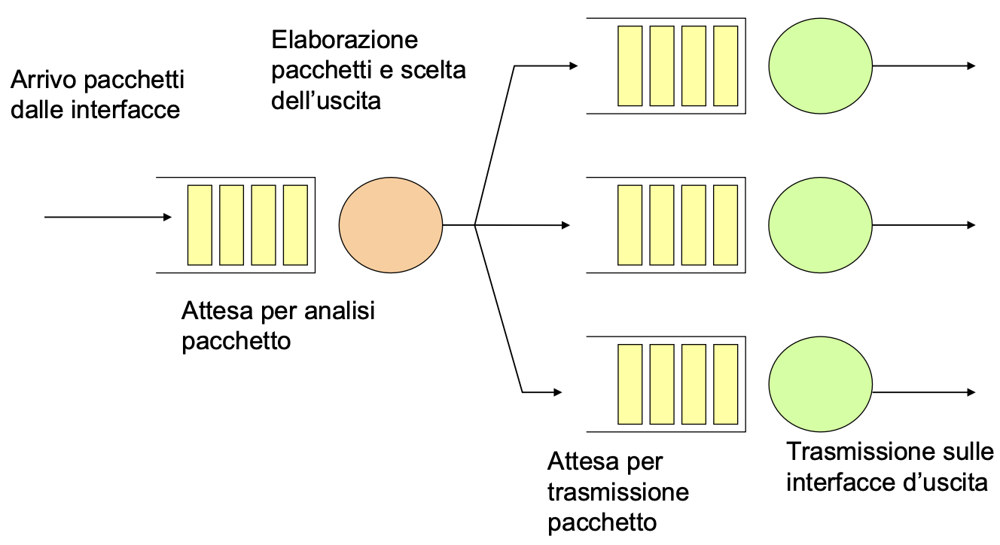
Dato che i nodi in una rete a commutazione di pacchetto devono memorizzare ed elaborare i pacchetti per riuscire a ritrasmetterli verso la loro destinazione, nasce un ritardo di elaborazione da aggiungere al ritardo totale.
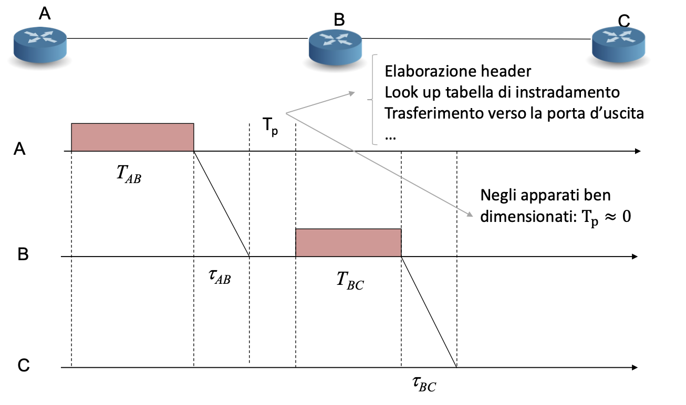
Ritardo di accodamento

Nel caso la linea d’uscita sia occupata nella trasmissione di un altro pacchetto, il ritardo aumenta, poiché nella commutazione di pacchetto, ogni pacchetto utilizza completamente le risorse durante la sua trasmissione per un dato tempo.
Throughput
È la quantità di informazione trasportata (con successo) da una rete o porzione di rete nell’unità di tempo. Si abbrevia con THR e si misura in bit/s.
Su un collegamento di capacità C, si definisce una quantità simile al THR, detta traffico, che si calcola come A = THR / C e si misura in Erlang. Assume valori tra 0 e 1 compresi ed è, di fatto, una misura di efficienza.
Perdita
È un indice della quantità di informazione persa nell’attraversamento della rete. Può essere riferita ai pacchetti o ai bit (si parla di tasso di errore sul bit, o Bit Error Rate).
La perdita è determinata da:
- Ricezione di UI corrotte (errori di trasmissione)
- Saturazione dei buffer lungo il percorso end-to-end
È espressa attraverso una probabilità 𝛑: 𝛑 = numero bit o UI persi / numero bit o UI trasmessi
Livello fisico
Segnali
I segnali possono essere divisi in due categorie:
- Segnali fisici (Sorgenti analogiche o continue): associati a grandezze fisiche e tipicamente continue.
- Segnali logici (Sorgenti digitalinumeriche o discrete): sequenze /nativamente numeriche oppure segnali fisici digitalizzati.
L’informazione trasportata da Internet è sempre in forma numerica, anche se l’informazione originale è prodotta da una sorgente analogica.

Un segnale si può rappresentare con una funzione del tempo.
- Segnali a tempo continuo:
s(t), t >= 0, dove s(t) rappresenta la variazione nel tempo di una grandezza fisica misurabile (tensione, corrente, intensità di campo elettrico, intensità luminosa…)
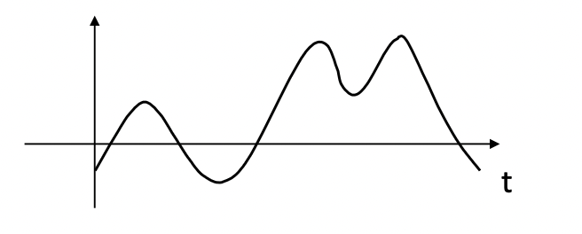
- Segnali a tempo discreto: rappresenta una sequenza di impulsi ideali che si succedono a intervalli regolari Tc.
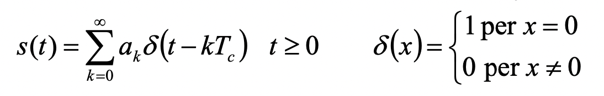
La sequenza dei numeri {ak}, detta sequenza dei campioni, può rappresentare un segnale digitale.
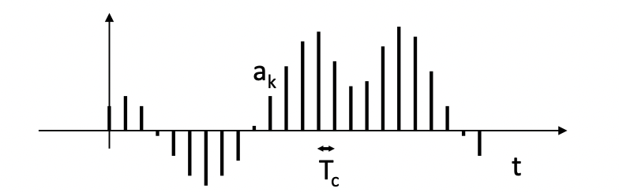
- Segnale periodico: si ripete nel tempo dopo ciascun periodo T:
s(t + T) = s(t), t>=0. Nella realtà, i segnali di interesse non sono mai perfettamente periodici (altrimenti non porterebbero informazione), ma variazioni di essi. L’analisi dei segnali periodici è più semplice di quella dei segnali non periodici, quindi essi sono un modello analitico utile.
Analisi di Fourier
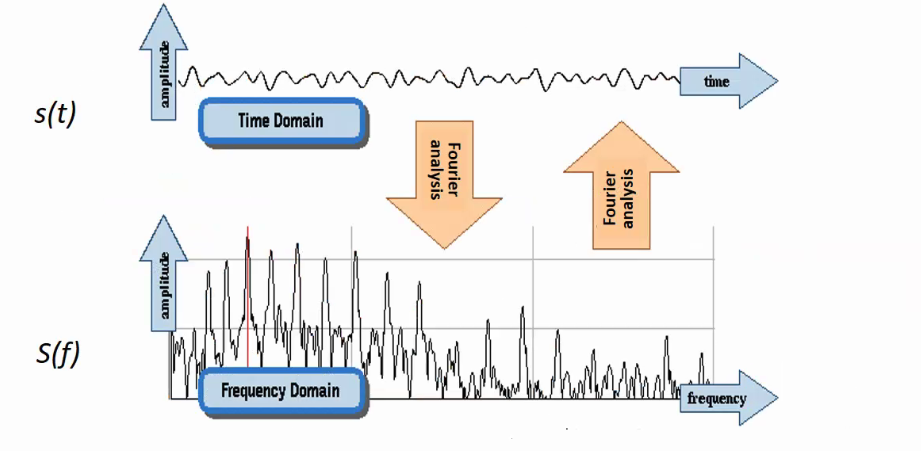
L’analisi di Fourier serve a trasformare matematicamente un segnale dal dominio del tempo al dominio della frequenza.
L’analisi di Fourier consente di studiare qualsiasi segnale scomponendolo in sinusoidi.
I segnali periodici di periodo T possono essere scomposti in un numero discreto di sinusoidi (serie di Fourier) di frequenza multipla della frequenza fondamentale (o armonica fondamentale) f0 = 1 / T:
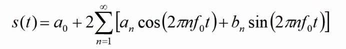
Le sinusoidi costituenti sono dette armoniche o componenti spettrali. Ciascuna di esse ha una sua ampiezza Sn = sqrt(a^2 + b^2) ed in generale è presente anche una componente continua a0, che è un valore costante.

Esempio di spettro di un segnale
- Segnale periodico a media nulla
- T = 0,5 ms
- f0 = 2 kHz

Una sinusoide di periodo T e frequenza f0 = 1 / T nel dominio del tempo può essere rappresentata nel dominio delle frequenze dalla sola componente alla frequenza f0.
- Segnale periodico a media nulla (onda quadra)
- T = 0,5 ms
- f0 = 2 kHz
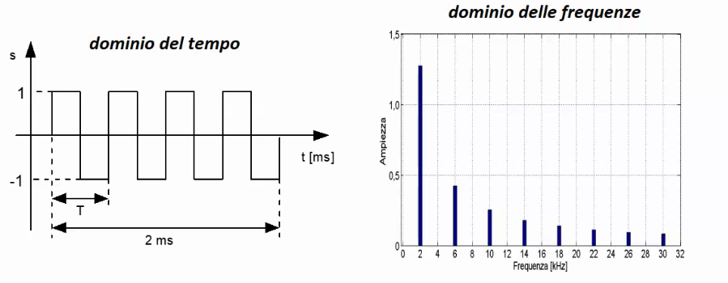
In questo caso, il segnale è più complesso rispetto ad una sinusoide e quindi viene approssimato con più sinusoidi, perciò il dominio delle frequenze è maggiormente popolato.
- Segnale periodico a media non nulla (onda quadra)
- T = 400 ns
- f0 = 2,5 MHz

In questo caso invece, troviamo anche una componente continua, che non varia nel tempo.
- Onda a dente di sega (spettro con armoniche sia pari sia dispari)
- T = 4,545 ms
- f0 = 220 Hz
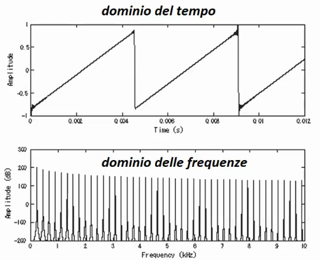
Caratterizzazione spettrale dei segnali analogici
La trasformata di Fourier generalizza la serie di Fourier al caso di segnali non periodici. La trasformata scompone i segnali non periodici in un insieme continuo di armoniche. Ogni componente è in generale moltiplicata per un coefficiente complesso, che determina un’ampiezza ed una fase della sinusoide.
La funzione X(f) che descrive le ampiezze e le fasi delle sinusoidi componenti è lo spettro del segnale x(t).
Banda di un segnale
La banda di un segnale (B) è l’insieme delle armoniche che costituiscono un segnale.
Esistono due tipi di segnali:
- A banda stretta: variano lentamente nel tempo
- A banda larga: variano velocemente nel tempo
Esempi di bande:
- Segnale telefonico: 300 - 4000 Hz
- Voce: 300 - 8000 Hz
- Musica: 100 - 20.000 Hz
- TV analogica PAL: 0 - 5 MHz (PAL: Phase Alternating Line)
- Cinema: 0 - 500 MHz
Trasformazione AD (analog to digital)
Per poter trasmettere un segnale analogico, è necessario trasformarlo in un segnale digitale. Si fa attraverso tre fasi.
Campionamento
Trasformazione di un segnale tempo continuo ad un segnale tempo discreto.
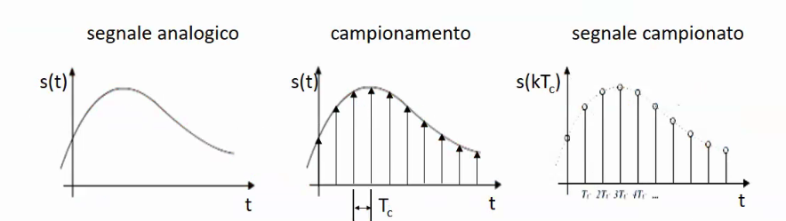
Il Teorema di Nyquist (o Teorema del campionamento) dice che un segnale tempo-variante è completamente determinato dai suoi campioni presi a intervalli di durata Tc tale che Tc < 1 / 2fMax, dove fMax è la frequenza massima nello spettro del segnale.
La frequenza di Nyquist è la frequenza minima da usare per il campionamento: fc > fN = 2fMax.
Se non si rispetta il teorema di Nyquist, si rischia di non poter ricostruire il segnale originale fedelmente (aliasing). Se invece la frequenza di campionamento è esattamente il doppio della frequenza massima del segnale, campionando negli istanti di attraversamento degli zeri si possono confondere sinusoide e componente continua.
La ricostruzione del segnale al ricevitore avviene con un filtro che taglia le frequenze oltre B.
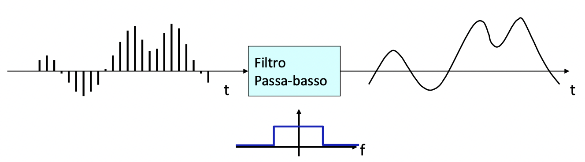
Frequenze di campionamento tipiche:
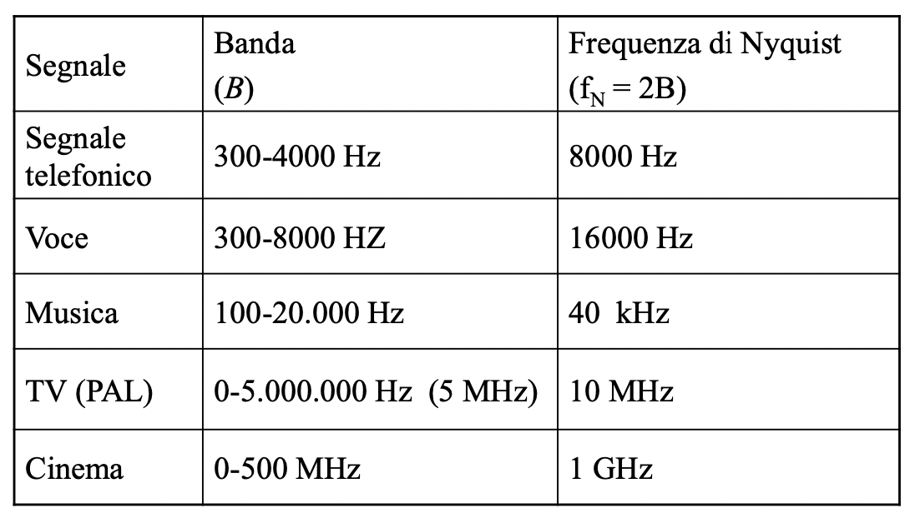
Quantizzazione
È l’operazione con cui una grandezza che assume valori in un intervallo continuo è trasformata in un valore all’interno di un set discreto di valori.
Nella trasformazione si commette un errore di quantizzazione, dovuto all’approssimazione. Più livelli ci sono, minore sarà l’errore di quantizzazione. Aumentare livelli di quantizzazione però aumenta il numero di bit da utilizzare.

Codifica
Ciascun campione quantizzato è codificato, ossia trasformato in bit, in funzione del numero di livelli l secondo questa espressione: l = 2^m.
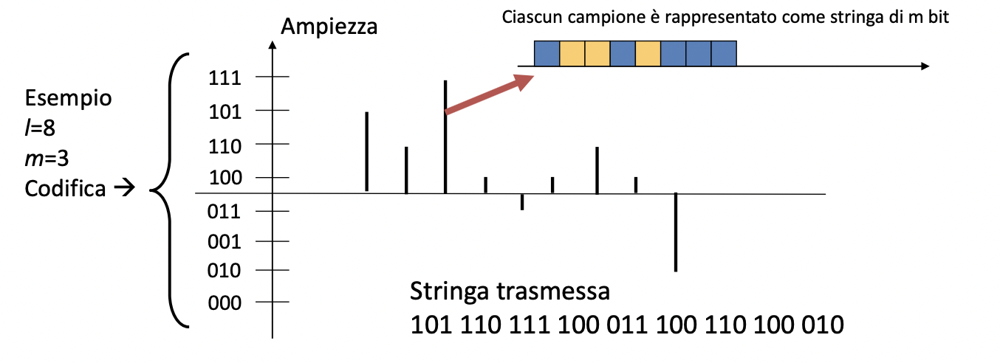
Livelli di quantizzazione di alcuni segnali:
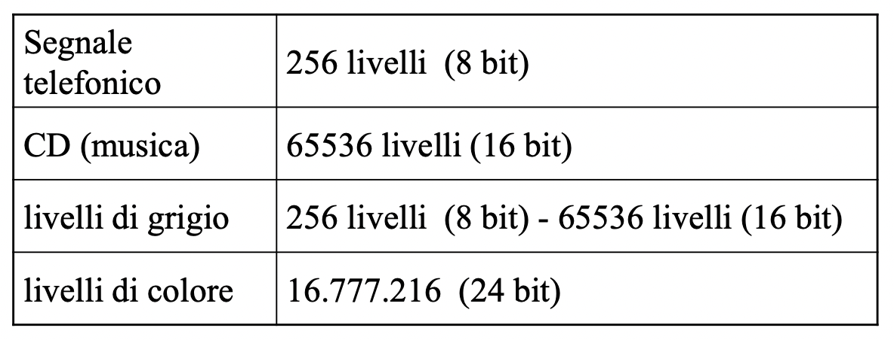
Flussi binari equivalenti
Il bitrate ottimale per trasmettere un segnale dipende dalla sua banda. La formula generale per calcolare il bitrate ottimale è Rb = 2B*b, dove B è la banda e b sono i bit usati per la quantizzazione.
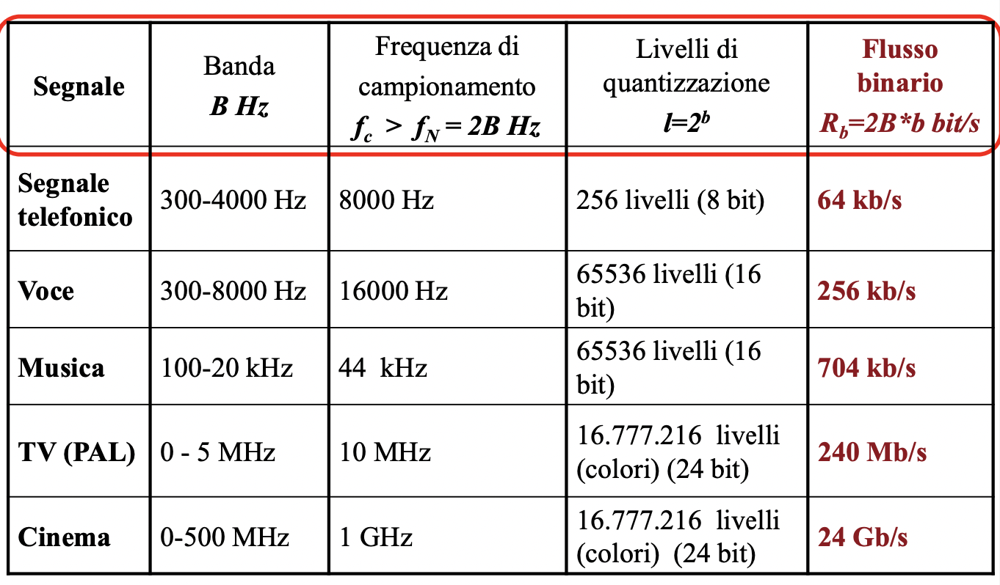
Modulazione
La sequenza digitale viene usata per modificare, ossia modulare, uno dei parametri (ampiezza, frequenza, fase…) di un segnale fisico inviato nel mezzo trasmissivo.
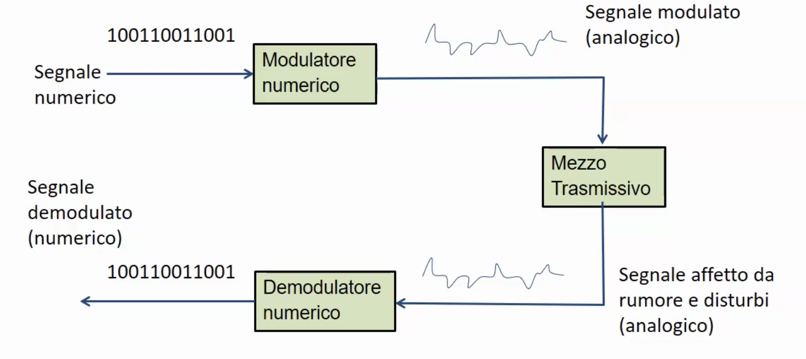
La modulazione può avvenire in banda base o in banda passante:
- Banda base: i segnali hanno uno spettro contiguo rispetto all’origine. Un esempio è la PAM (Pulse Amplitude Modulation), in cui il bit corrisponde ad un impulso di ampiezza positiva (1) o negativa (0).
- Banda passante o traslata: i segnali da modulare hanno uno spettro traslato su intervalli di frequenze non contigue all’origine. Si usa un’onda elettromagnetica detta portante (carrier) ad una determinata frequenza fp per traslare lo spettro del segnale intorno alla frequenza della portante.
Modulazione d’ampiezza analogica
Esempio di modulazione d’ampiezza in banda base: PAM (Pulse Amplitude Modulation):
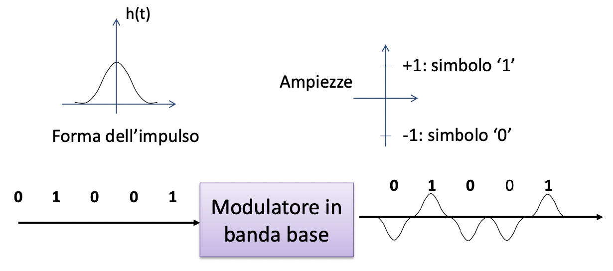
Esempio di modulazione in banda traslata: moltiplico l’onda del segnale da modulare con la sinusoide base per ottenere il segnale modulato da inviare:
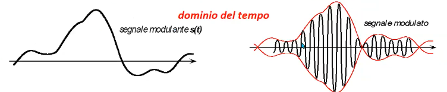
Si ottiene uno spettro di segnale effettivamente traslato:
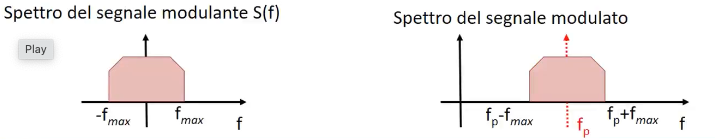
Modulazione numerica (o digitale) in banda traslata
In base ai valori che assumono i bit da trasmettere si modula uno dei parametri della sinusoide portante:
- Modulazione d’ampiezza (ASK, Amplitude Shift Keying)
- Modulazione di frequenza (FSK, Frequency Shift Keying)
- Modulazione di fase (PSK, Phase Shift Keying)
- Modulazione QAM (Quadrature-Amplitude Modulation): cambiamento misto di ampiezza e fase
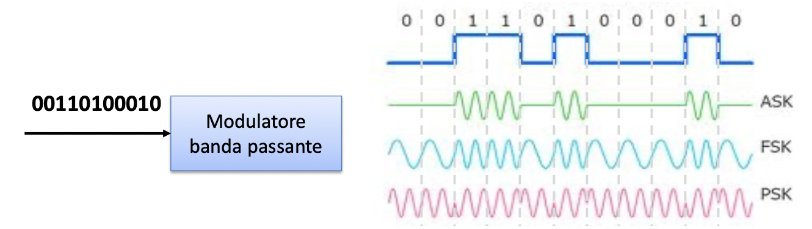
Per aumentare la capacità di canale è possibile incrementare l’ordine della modulazione: Modulazione Multilivello.
Servono:
- Un bitrate in ingresso diviso in gruppi di
log2(N) - N livelli di ampiezza diversi
- Ad ogni simbolo/impulso corrispondono
n = log2(N)bit
Esempi:
- PAM con 4 livelli di ampiezza:
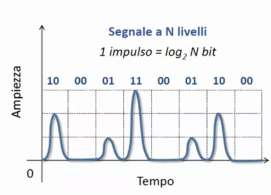
Si definisce in questo contesto una velocità diversa dal bitrate, chiamata baud rate, che misura il numero di simboli al secondo. Vale la relazione Rb = Rs * log2(N).
- Modulazione multilivello di fase:
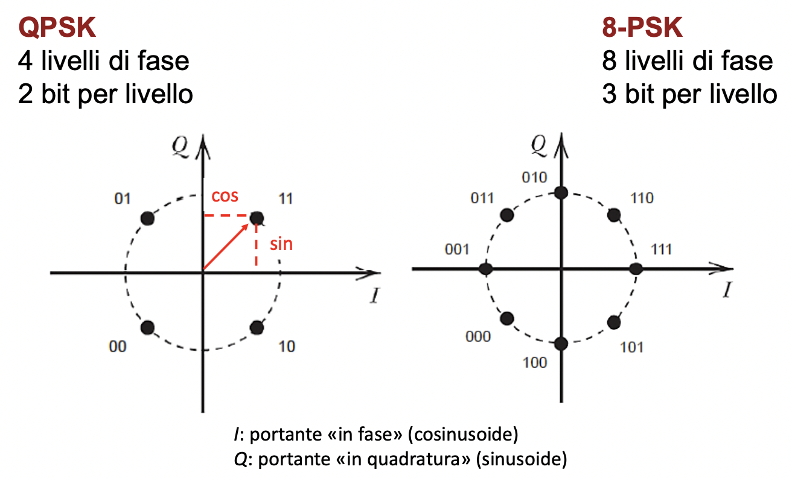
Dove I rappresenta la portante in fase (cosinusoide), mentre Q rappresenta la portante in quadratura (sinusoide). I valori differenti di seno e coseno sono coloro che distinguono i baud da trasmettere.
- Modulazione multilivello di ampiezza e fase (QAM):
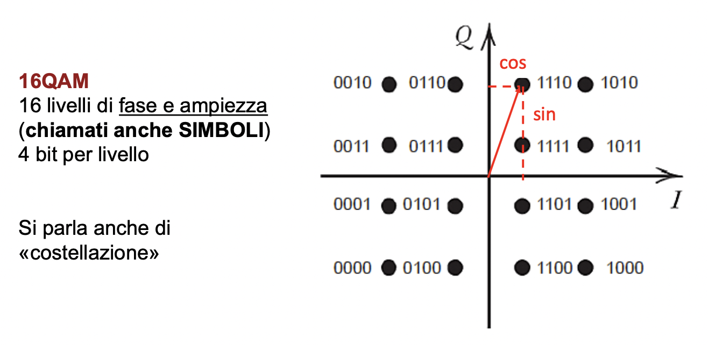
16 livelli (16QAM) di fase e ampiezza (chiamati anche simboli), con quattro bit per livello. Si parla anche di costellazione.
Usando la trasmissione multilivello, posso incrementare la capacità trasmissiva di n volte. Tuttavia, la velocità massima non può essere aumentata arbitrariamente aumentando i livelli, per due ragioni:
- Se mantengo inalterata la distanza tra i vari simboli, devo aumentare l’energia dell’impulso, necessaria per trasmettere i simboli più esterni della costellazione.
- Se mantengo inalterata l’energia massima, la trasmissione è più sensibile al rumore introdotto dal canale, che può far equivocare il livello in ricezione (errore di ricezione)
Canale trasmissivo
Un impulso che attraversa un canale trasmissivo è soggetto ad alterazioni di vario tipo:
- Attenuazione: la potenza del segnale si riduce in funzione della distanza percorsa e della frequenza del segnale.
- Dispersione: introduzione di un ritardo differente per ciascuna componente spettrale del segnale.
Tali distorsioni possono essere sintetizzate tramite una funzione H(f) nel dominio delle frequenze, detta risposta in frequenza del canale trasmissivo. Inoltre il canale trasmissivo può introdurre rumore (segnale di disturbo) che influisce generalmente su tutte le componenti dello spettro elettromagnetico (cioè su tutte le armoniche che costituiscono l’impulso). Il rumore è generalmente descritto con modelli probabilistici, poiché è casuale e non deterministico. Il rumore bianco è chiamato così perché si presume sia presente in tutte le frequenze.
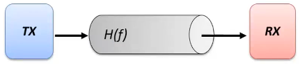
Ogni mezzo trasmissivo è caratterizzato da un intervallo di frequenze in cui l’alterazione del segnale è minima. Quella banda è detta banda passante del canale. È opportuno che il segnale introdotto nel canale sia alla frequenza che il canale non distorce. La banda passante del canale dev’essere non solo ben centrata sullo spettro del segnale, ma deve anche essere più larga dello spettro del segnale, per evitare che vengano tagliate parti di esso.
Una proprietà che nasce dalla trasformata di Fourier fa sì che lo spettro del segnale immesso nel canale trasmissivo S(f) sia ricevuto con uno spettro S'(f) = S(f) * H(f), dove H(f) è la funzione di trasferimento del canale.
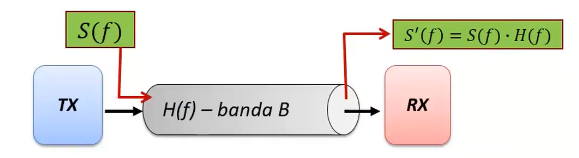
Canale passa-basso e passa-banda
Se il mezzo presenta una banda passante intorno alla frequenza 0, viene detto canale passa-basso o in banda base. Ha un’attenuazione costante sulla sua banda e fa passare soltanto le frequenze più basse dello spettro.
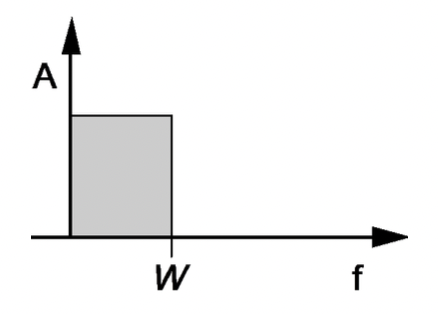
Un canale passa-banda (o in banda passante) invece fa passare solo una certa banda di frequenze e taglia ciò che sta intorno. Anche questo ha un’attenuazione costante sulla sua banda.
Deve sempre essere usata un’onda portante (modulazione in banda passante) per trasmettere il segnale.
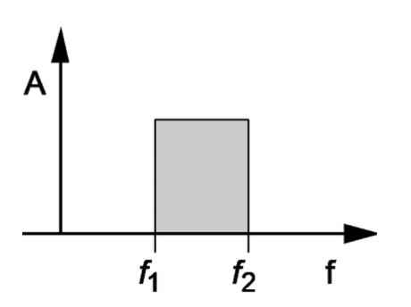
Al giorno d’oggi, quasi tutti i canali trasmissivi sono passa-banda.
Esempio della banda di un canale
Esempio 1: canale passa basso di larghezza W. Segnale periodico nel tempo a media nulla.
T = 500 μsF = 1 / T = 2 kHz
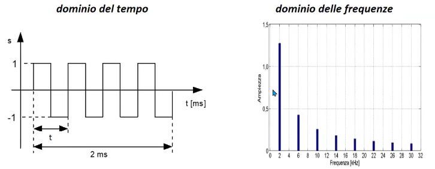
Di questo segnale sopravvivono soltanto le armoniche dispari dopo l’analisi di Fourier.
- Se la frequenza di taglio è 4 kHz:

Rimane soltanto la prima armonica
- Se la frequenza di taglio è 8 kHz:

Sono ora comprese due armoniche del segnale modulato, che vengono sommate. Così ci si avvicina all’onda quadra originale maggiormente.
- Se la frequenza di taglio è 16 kHz:

Le armoniche aumentano sempre di più, approssimando sempre meglio l’onda quadra
- Se la frequenza di taglio è 32 kHz:

Si distinguono molto bene i picchi dell’originale onda quadra.
Nessuna approssimazione sarà perfetta, poiché servirebbe una banda passante infinita per comprendere tutte le armoniche approssimanti dell’onda quadra. Ma si può tranquillamente approssimare raggiungendo un sufficiente livello di dettaglio.
Esempio 2: canale passa-basso di larghezza W. Segnale periodico nel tempo a media non nulla.
T = 400 nsF = 1 / T = 2.5 MHz
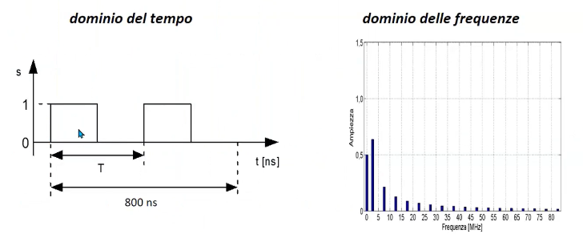
- 5 MHz

- 80 MHz

Canali e mezzi trasmissivi
- Mezzi trasmissivi guidati
- Mezzi elettrici: si modula un segnale che è associato ad una variazione di tensione o corrente
- Fibre ottiche: si modula un segnale sotto forma di impulsi luminosi
- Mezzi trasmissivi non guidati
- Onde radio: il segnale è associato ad un’onda elettromagnetica che si propaga nello spazio che ha la proprietà di riprodotte a distanza una corrente elettrica in un dispositivo ricevente (antenna)
Ciascun mezzo ha le proprie peculiarità riguardo a:
- Banda passante
- Attenuazione
- Sensibilità al rumore
Bande tipiche di mezzi trasmissivi
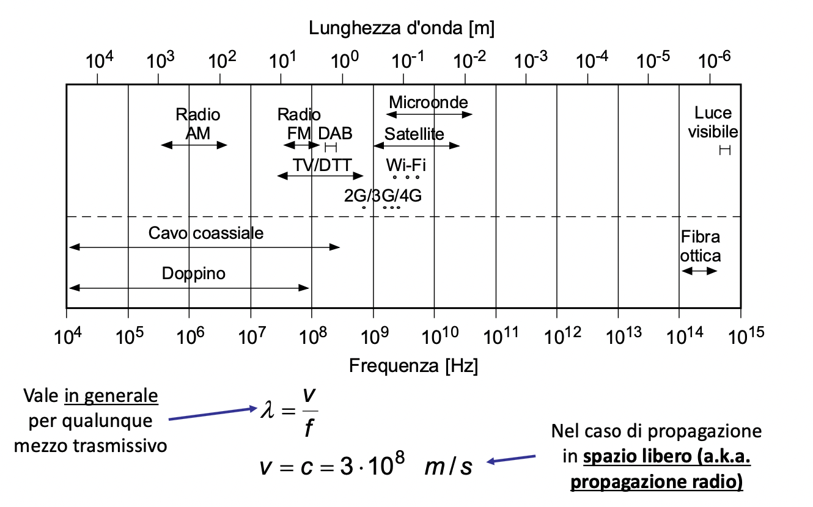
Velocità di trasmissione e banda passante del canale
Canale con banda passante pari a B [Hz].
Baud rate: Rs = ηs * B simboli al secondo, dove ηs è l’efficienza spettrale [(simboli/s) / Hz].
Si può dimostrare che usando impulsi ideali, ηs = 2, quindi Rs ~= 2B simboli/s, mentre usando forme di impulsi reali che resistono al rumore del canale: ηs = 1, quindi Rs ~= B.
- Trasmissione binaria: Bit rate massimo:
Rb = Rs ~= B bit/s. - Trasmissione multilivello con n bit per simbolo: Bit rate massimo:
Rb = nRs ~= nB bit/s.
Attenuazione
Se il segnale in ingresso ha una potenza Pin e il segnale di uscita ha una potenza Pout, si definisce attenuazione del collegamento il rapporto A = Pout / Pin. Viene generalmente indicato in decibel [dB]: A = 10log10(Pout/pin).
Il contrario dell’attenuazione è il guadagno.
Rumore
In un canale di comunicazione, tra trasmettitore e ricevitore, è sempre inserito un rumore casuale, a componenti non predicibili, con frequenze anche del nostro segnale. Questo può determinare errori di ricezione con una probabilità di errore P (qualità del sistema). La probabilità di errore quantifica quanti bit in una data sequenza vengono modificati a causa del rumore o di altri segnali o apparati che creano interferenza.
Il rumore si traduce in una probabilità di ricevere qualcosa di diverso dal dato trasmesso in questo modo:

Asse x: ampiezza del segnale ricevuto
Asse y: probabilità di ricezione di una data ampiezza
Questo tipo di grafico prende il nome di Probability Density Function (PDF).
Nel mondo ideale, senza avere rumore, posso ricevere soltanto due valori. Ma per effetto del rumore, la probabilità che ciò avvenga è distribuita su un set di intervalli.
Più alto è il picco nel grafico PDF, migliore è il canale.
Nel ricevitore si imposta una soglia di decisione, che serve al ricevitore ad avere un intervallo in cui il segnale verrà decodificato in un modo e un altro in cui verrà decodificato in un altro.
Con la modulazione multilivello:
Il ricevitore è provvisto di un decisore, che elabora il campione del segnale ricevuto. Si misura l’energia del simbolo ricevuto e la si confronta con dei possibili risultati attesi. La misura sarà un numero casuale per effetto del rumore del canale.
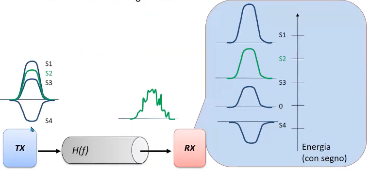
Errori in ricezione

Nel mondo ideale, la PDF di un dato simbolo ricade interamente nella sua soglia di decisione. Ma nel mondo reale, le PDF dei simboli possono accavallarsi. In questo caso, il decisore tradurrà un simbolo errato e si avrà un errore in ricezione.
Codici correttori
Si può abbassare la probabilità d’errore in un blocco adottando codici correttori d’errore (FEC, Forward Error Correction). Questi consistono nell’aggiungere dei bit di ridondanza (parità) in modo che gli errori che occorrono, se limitati in numero, possono essere corretti. Sono progettati in modo da correggere fino a c errori (potere correttore del codice).
Esempio: codice a ripetizione (n, 1); consiste nel ripetere tre volte il bit da trasmettere (n - 1) cifre di parità. Con n dispari è in grado di correggere c = (n - 1) / 2 errori.
Ritrasmissione
Se un codice non riesce a correggere un errore può spesso riuscire a rilevarlo (il controllo di parità dà risultato negativo). Nella trasmissione a commutazione di pacchetto è possibile rilevare gli errori in ricezione e richiedere la ritrasmissione del pacchetto errato (ARQ, Automatic Repeat reQuest).
Applicazioni di rete
Esempi di applicazioni di rete
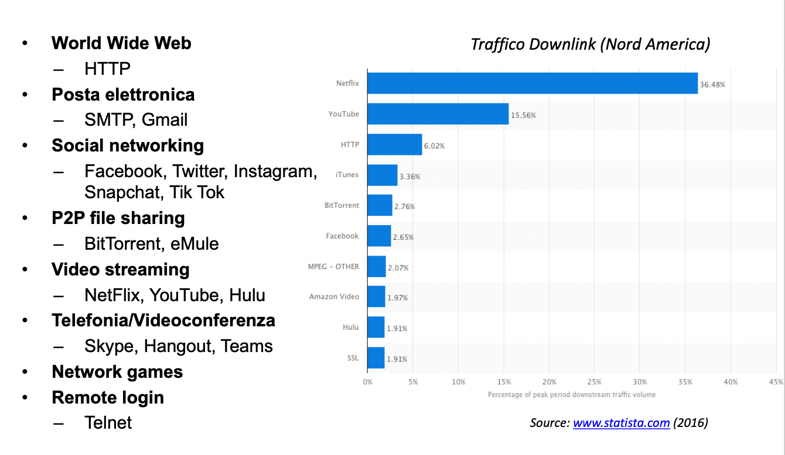
Cosa significa creare un’applicazione di rete?
Significa scrivere un software che possa:
- essere eseguito su diversi terminali
- comunicare con altri software remoti tramite la rete
Il browser web, per esempio:
- è un software in esecuzione su un dispositivo
- comunica con altri software tramite la rete
Le applicazioni sono solo nei terminali e possono essere facilmente sviluppate e diffuse. Inventare una nuova applicazione non richiede di cambiare il software della rete. I nodi non contengono software applicativo.
Architetture
Client-server
- I dispositivi coinvolti nella comunicazione implementano o solo il processo client o solo il processo server
- I dispositivi client e server hanno caratteristiche diverse
- Server:
- Deve essere sempre attivo e raggiungibile
- Possono ricevere richieste da molti client
- Hanno indirizzo IP fisso
- Client:
- Comunicano solo con il server, non con altri client
- Possono essere connessi in modo discontinuo
- Possono cambiare indirizzo IP
- Possono inviare più richieste allo stesso server
- Server:
Peer-to-peer
- I dispositivi coinvolti implementano sia la porzione client sia quella server
- Non ci sono server sempre connessi
- I terminali comunicano direttamente
- I peer sono collegati in modo intermittente e possono cambiare indirizzo IP
Alcuni esempi possono essere BitTorrent e Skype.
Elementi fondamentali per un applicazione di rete
- Host: dispositivo d’utente (laptop, smartphone, desktop…)
- Processo: programma software in esecuzione su un host
- Comunicazione inter-processo (IPC): tecnologie software il cui scopo è consentire a diversi processi di comunicare scambiandosi informazioni e dati
- Processi locali: risiedono sullo stesso host
- Processi remoti: risiedono sul host diversi
- Perché funzionino c’è bisogno di indirizzamento dei processi (bisogna conoscere l’indirizzo del processo e dell’host su cui il processo è in esecuzione) e di protocolli di scambio di dati, che decide i tipi, la sintassi, la semantica e la tempistica dei messaggi.
Indirizzamento
Lo scambio dei messaggi tra processi applicativi:
- è supportato dai servizi offerti dai livelli inferiori
- avviene attraverso i SAP (Service Access Point)
Ogni processo è associato ad un SAP del livello inferiore (trasporto), al quale è associata a sua volta l’informazione di indirizzamento del processo nell’host (socket).

Esempio: cosa identifica il browser Chrome in esecuzione sul nostro smartphone?
- Indirizzo dell’host: indirizzo IP univoco di 32 bit
- Indirizzo del SAP: associato al processo in esecuzione sull’host: numero di porta
Indirizzo di un processo in esecuzione su un host: Indirizzo IP + numero di porta = Socket
Le socket sono “porte di comunicazione“:
- Il processo trasmittente mette il messaggio “fuori dalla porta“.
- La rete raccoglie il messaggio e lo trasporta fino alla porta del destinatario
Quale protocollo di trasporto usare?
Requisiti:
- Affidabilità: alcune applicazioni possono tollerare perdite parziali, altre richiedono totale affidabilità.
- Ritardo: alcune applicazioni richiedono un ritardo molto basso.
- Banda: alcune applicazioni richiedono un minimo di velocità di trasferimento, altre si adattano alla velocità disponibile (applicazioni elastiche).
TCP e UDP
TCP: Transmission Control Protocol
- Connection-oriented: instaurazione della connessione prima dello scambio di dati
- Trasporto affidabile: nessuna perdita
- Controllo di flusso: il trasmettitore regola la velocità in base al ricevitore
- Controllo di congestione: per impedire di sovraccaricare la rete
- Controllo di errore: per garantire l’integrità dell’informazione
UDP: User Datagram Protocol
- Connectionless: nessuna connessione prima dello scambio di dati
- Trasporto non affidabile: possibili perdite
- Nessun controllo di flusso
- Nessun controllo di congestione
- Controllo di errore: opzionale
Alcuni esempi di servizi che usano questi protocolli di trasporto:
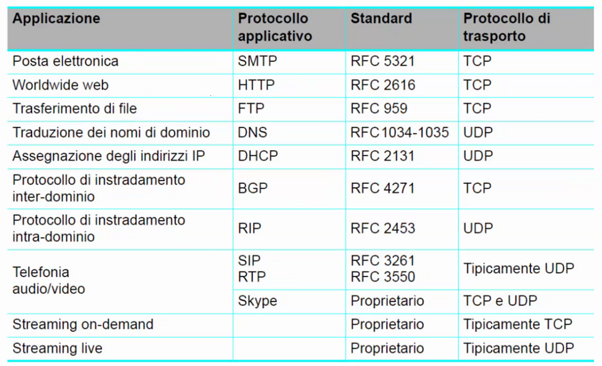
Primitive delle socket
Per richiedere e fornire un servizio, il processo applicativo scambia informazioni con allivellò di trasporto tramite delle primitive di servizio attraverso le socket. Possono essere inviate da client, server o entrambi.
Caso TCP
Operazioni iniziali:
- Server: passive open
- Client: active open
Primitive di interazione delle applicazioni con le socket:

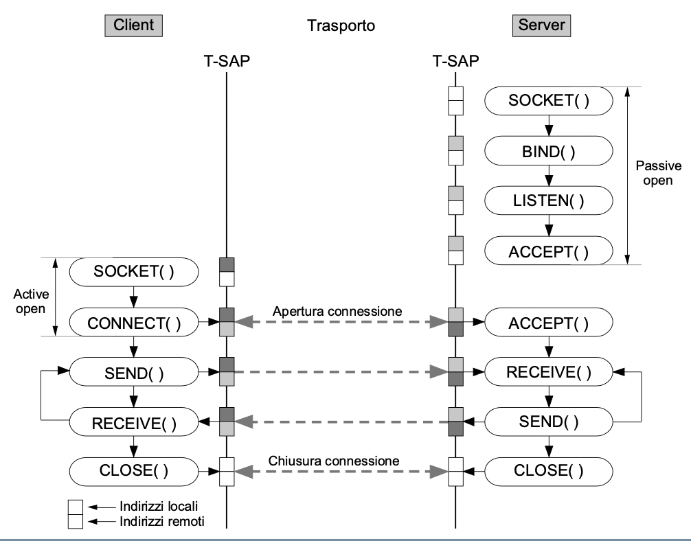
Caso UDP
Non ci sono primitive per l’instaurazione di una connessione e generalmente le operazioni sono simili. Le differenze principali sono in Send() e Receive(), poiché non essendo instaurata una connessione preliminare è necessario specificare a chi mandare e da chi ricevere informazioni.
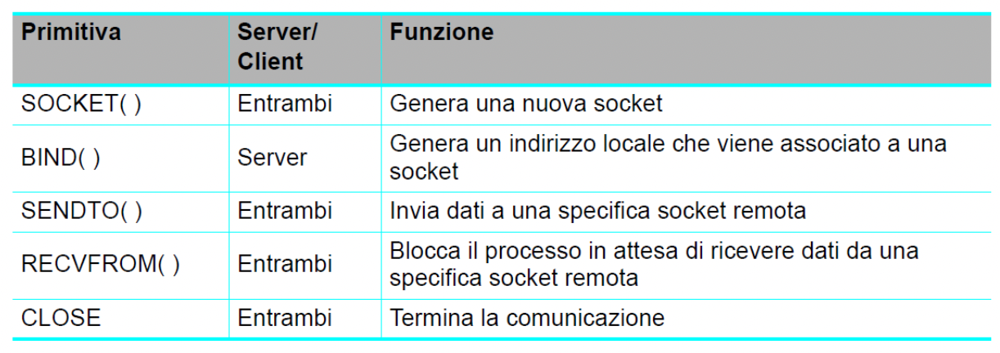
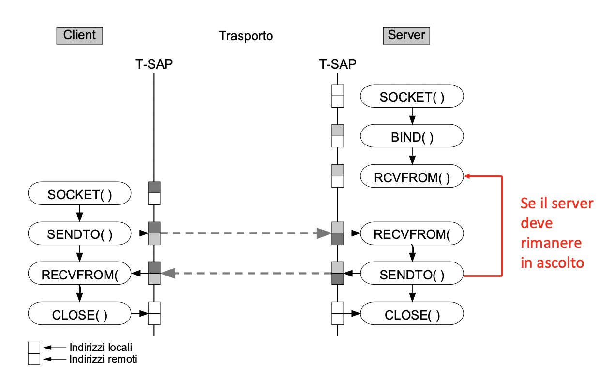
Il servizio di Web Browsing
Le pagine web sono fatte di oggetti. Gli oggetti possono essere file HTML, immagini, applet Java, file audio e video, collegamenti ad altre pagine web…
Generalmente le pagine sono costituite da un file HTML o php base che chiama gli altri oggetti. Ogni oggetto è indirizzato da una Uniform Resource Locator (URL), per esempio: http://www.polimi.it:80/index.html.
Protocollo HTTP
L’architettura per l’HTTP si basa sul client-server. Il client è il browser che effettua richieste di pagine web, le riceve e le mostra all’utente; il server invia gli oggetti richiesti tramite risposte HTTP.
L’HTTP è un protocollo stateless, ossia il server non mantiene uno stato della connessione, un registro dell’interazione client-server.
L’HTTP si appoggia su TCP a livello di trasporto:
- Il client HTTP inizia una connessione TCP attraverso il server (porta 80)
- Il server HTTP accetta connessioni TCP da client HTTP
- Client e server HTTP si scambiano informazioni
- La connessione TCP tra client e server HTTP viene chiusa
Modalità di connessione
Le modalità di connessione sono persistente e non persistente:
- Non persistente (HTTP v1.0 default mode)
- Una connessione TCP per una sola sessione richiesta-risposta; inviato l’oggetto, il server chiude la connessione TCP
- La procedura viene ripetuta per tutti i file collegati al documento base
- Le connessioni TCP per più oggetti possono esser aperte in parallelo per minimizzare il ritardo
- Persistente
- La connessione TCP rimane aperta e può essere usata per trasferire più oggetti della stessa pagina web o più pagine web.
- Without pipelining: richieste HTTP inviate in serie, si aspetta la risposta prima di fare una nuova richiesta (HTTP v1.1 default mode)
- With pipelining: le richieste HTTP vengono accodate ed inviate insieme, senza attendere la risposta (HTTP v1.1 supported mode)
- La connessione TCP rimane aperta e può essere usata per trasferire più oggetti della stessa pagina web o più pagine web.
Round Trip Time (RTT)
Tempo necessario per trasferire un messaggio dal client al server e ritorno e per ricevere il relativo ACK.
Tempo di trasferimento in HTTP:
- un RTT per iniziare la connessione TCP
- un RTT per inviare i primi byte della richiesta HTTP e ricevere i primi byte di risposta
- tempo di trasmissione dell’oggetto
Il tempo è soltanto una stima, non è un calcolo preciso.
Supponendo che la pagina web contenga 10 oggetti oltre al file HTML base, il tempo di download dell’intera pagina è:
- Non persistente:
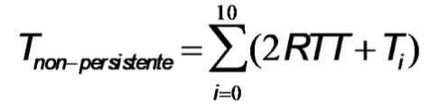
- Persistente:
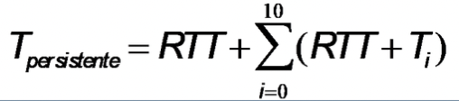
Tempistiche di comunicazione persistente e non persistente
HTTP 1.0 non persistente:
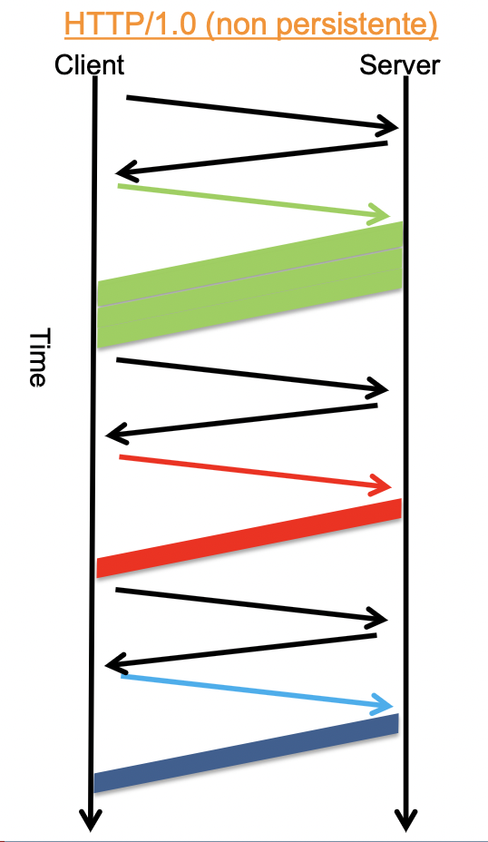
HTTP 1.1 persistente, senza pipelining
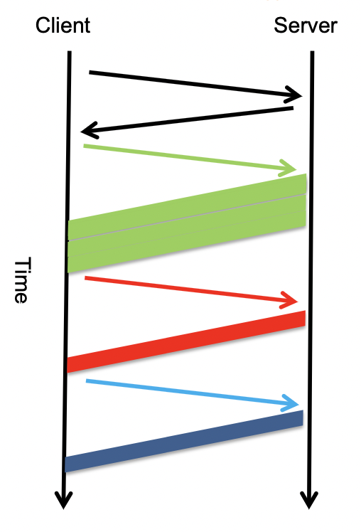
HTTP 1.1 persistente, con pipelining
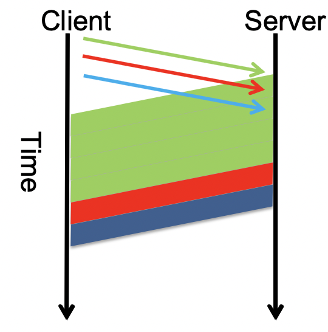
HTTP 1.1 e 2
L’HTTP 1.1 permette il pipelining, ma a condizione che gli oggetti richiesti vengano generati nello stesso ordine delle richieste. Questo impone Head Of Line (HOL) blocking se c’è un oggetto particolarmente grande.
HTTP 2 permette invece che un oggetto grande venga trasmesso inframezzandolo con oggetti brevi, grazie alla gestione a stream: si può formare rapidamente un’anteprima della pagina, anche se con qualche dettaglio in meno.
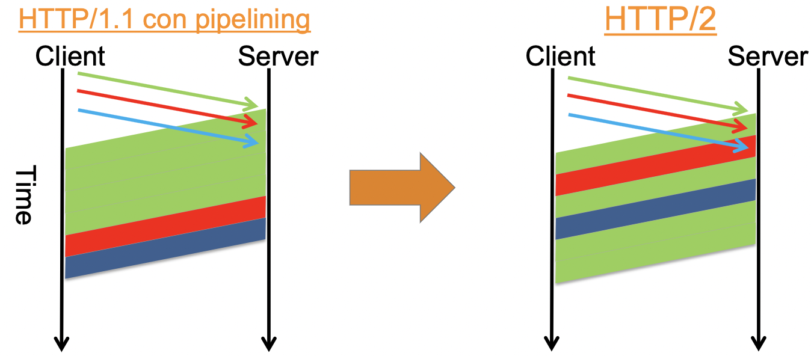
Messaggi HTTP
Richieste
I messaggi sono codificati in ASCII (human-readable)

- Request line: Method, URL, Version
- Method: tipo di operazione che il client richiede al server
- URL: identifica la risorsa locale rispetto al server
- Version: indica la versione del protocollo HTTP
- Header lines
- Entity body (generalmente vuoto, pieno nel caso di alcuni metodi come
POST)
Esempi di metodi
GET: È usato quando il client vuole scaricare un documento dal server (specificato nell’URL). Il server normalmente risponde con il documento richiesto nel corpo del messaggio di rispostaHEAD: È usato quando il client non vuole scaricare il documento ma solo alcune informazioni sul documento (come ad esempio la data di ultima modifica). Nella risposta il server non inserisce l’intero documento ma solo degli header informativiPOST: È usato per fornire al server degli input da utilizzare per un particolare oggetto identificato nell’URLPUT: È utilizzato per memorizzare un documento nel server. Il documento viene fornito nel corpo del messaggio e la posizione di memorizzazione nell’URL.
Altri metodi: PATCH, COPY, MOVE, DELETE, LINK, UNLINK, OPTIONS
Esempi di header HTTP
Servono per scambiare informazione di servizio aggiuntiva. È possibile inserire più linee di header per messaggio.
Cache-control: informazioni sulla cacheAccept: formati accettatiAccept-language: linguaggio accettatoAuthorization: mostra i permessi del clientIf-modified-since: invia il documento richiesto solo se modificatoUser-agent: tipo di user agent
Esempio di richiesta HTTP
GET /index.html HTTP/1.1\r\n
Host: www-net.cs.umass.edu\r\n
User-Agent: Firefox/3.6.10\r\n
Accept: text/html,application/xhtml+xml\r\n
Accept-Language: en-us,en;q=0.5\r\n
Accept-Encoding: gzip,deflate\r\n
If-modified-since: <date>
Accept-Charset: ISO-8859-1,utf-8;q=0.7\r\n
Keep-Alive: 115\r\n
Connection: keep-alive\r\n
\r\nRisposte
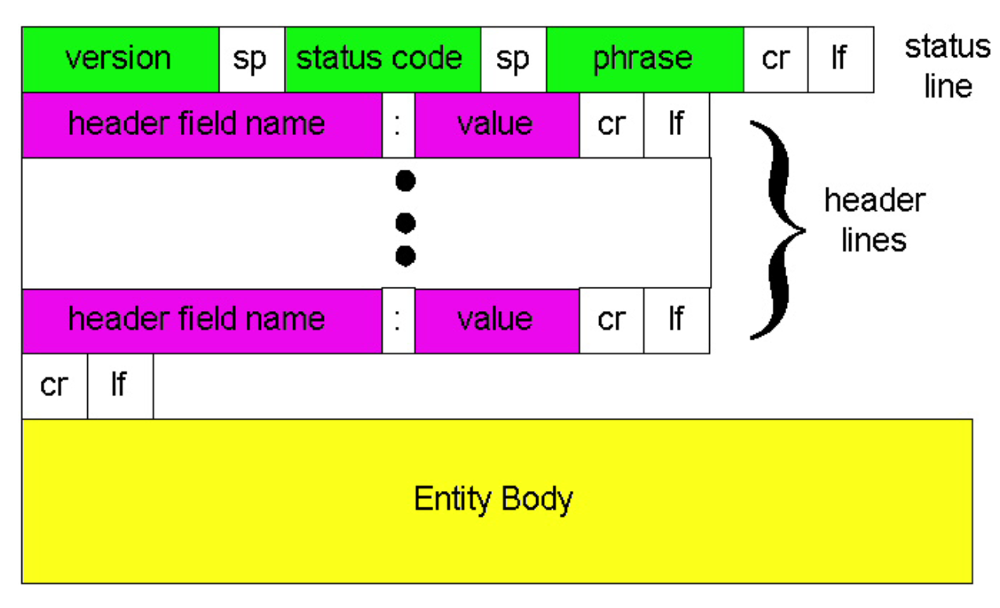
- Status line: Version, Status code, Phrase
- Status code: codice che informa il client di alcuni eventi
- (1xx): Informational
- (2xx): Success
- (3xx): Redirection
- (4xx): Client error
- (5xx): Server error
- Phrase: messaggio di stato, correlato al codice di stato (OK, Bad Request…)
- Header lines
- Entity body (generalmente pieno, contiene l’elemento richiesto dal client)
Tabella di status code comuni
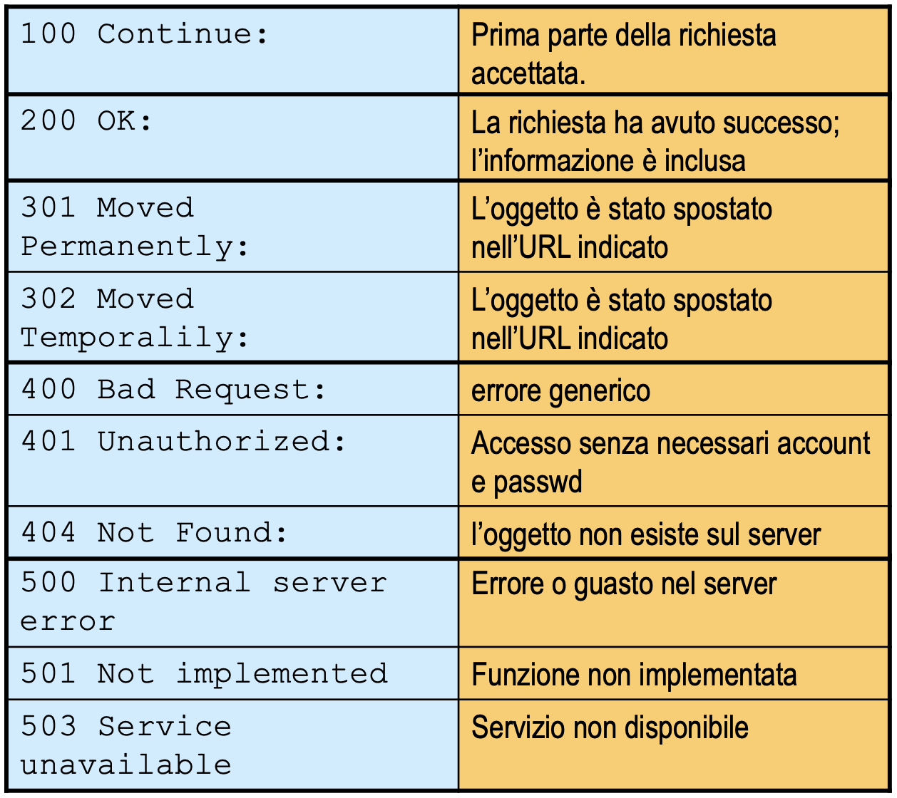
Esempio di risposta
HTTP/1.1 200 OK\r\n
Date: Sun, 26 Sep 2010 20:09:20 GMT\r\n
Server: Apache/2.0.52 (CentOS)\r\n
Last-Modified: Tue, 30 Oct 2007 17:00:02 GMT\r\n
ETag: "17dc6-a5c-bf716880"\r\n
Accept-Ranges: bytes\r\n
Content-Length: 2652\r\n
Keep-Alive: timeout=10, max=100\r\n
Connection: Keep-Alive\r\n
Content-Type: text/html; charset=ISO-8859-1\r\n
\r\n
<dati dell'Entity Body>Conditional GET
Ha l’obiettivo di non inviare un oggetto richiesto se è già presente presso il client. Si inserisce nella richiesta HTTP la data dell’oggetto presente in cache locale tramite l’header: If-modified-since: <date>. La risposta HTTP non contiene l’oggetto richiesto se la copia presente al client è aggiornata.
Risposta: HTTP/1.0 304 Not Modified
Mantenere uno “stato” in HTTP
Poiché l’HTTP è stateless, i fornitori di contenuti possono usare i cookies per tracciare le attività dell’utente.
Elementi dei cookie
- Un header
set-cookienelle risposte HTTP - Un header
cookienella prossima richiesta HTTP - Una lista di cookie mantenuta sull’host (nella cache del browser)
- Un database di cookie mantenuto dal sito web
Esempio di set-cookie
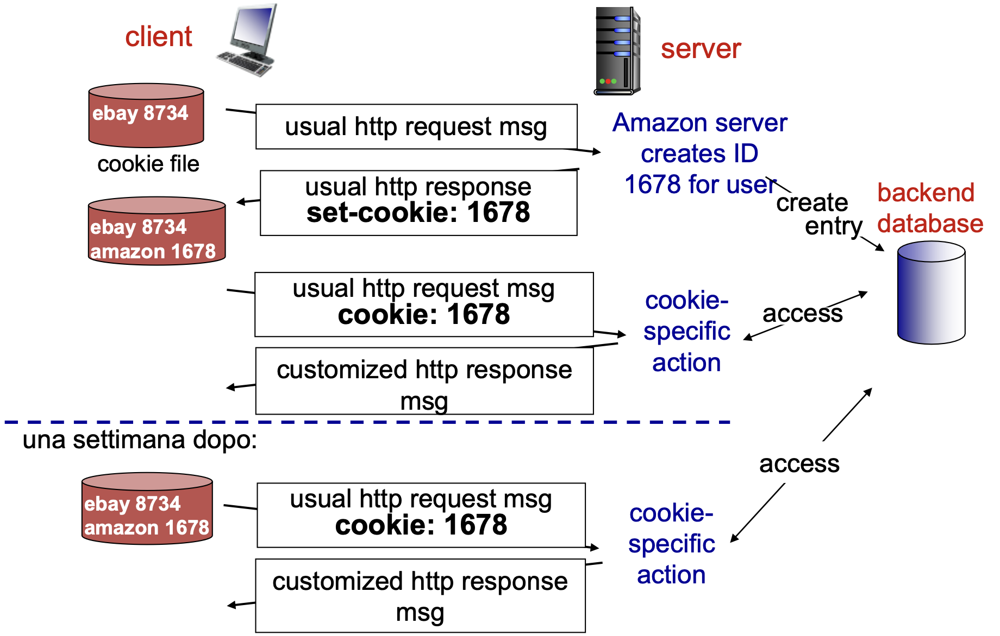
Proxy HTTP
Hanno l’obiettivo di fare un caching di più alto livello. Devono rispondere alle richieste HTTP senza coinvolgere il server HTTP, in modo da memorizzare quella pagina web e far sì che altri utenti connessi al Proxy ricevano la stessa pagina richiesta più velocemente.
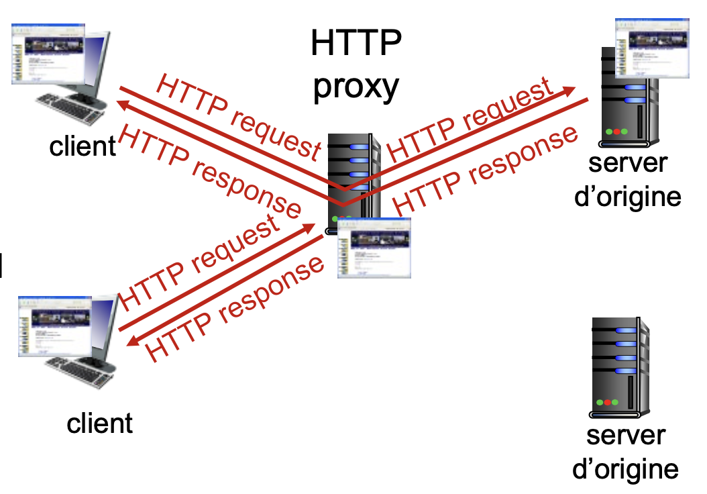
Il client invia tutte le richieste HTTP al Proxy. Se il Proxy ha già la risorsa richiesta, sarà lui a rispondere. Altrimenti sarà il Proxy a interrogare il server d’origine per ricevere la risorsa.
I Proxy sono definiti application gateway, ovvero instradatori di messaggi di livello applicativo (sono host fittizzi). Devono essere sia client, nei confronti del server d’origine, sia server, nei confronti degli utenti ad esso connessi, contemporaneamente.
L’utilizzo di un Proxy fa sì che un server veda tutte le connessioni ad esso fatte arrivare dal Proxy, come se le avesse fatte un singolo utente.
Condivisione equa di risorse
La velocità di trasferimento di una rete dipende da molti fattori:
- Trasmissione
- Propagazione
- Accomodamento nei nodi
- Connectionless e Connection-oriented
Si può mostrare che in condizioni ideali il meccanismo di controllo del TCP (Connection-oriented) è in grado di:
- Consentire una suddivisione equa della capacità di ciascun link tra i diversi flussi che lo attraversano
- Limitare la congestione di rete
Nella realtà, i valori dei rate indicati sono solo valori medi e valgono solo in condizioni ideali e a regime (flussi di lunga durata). Il ritmo di trasmissione cambia sempre e in condizioni reali la condivisione può non essere equa.
Esempi
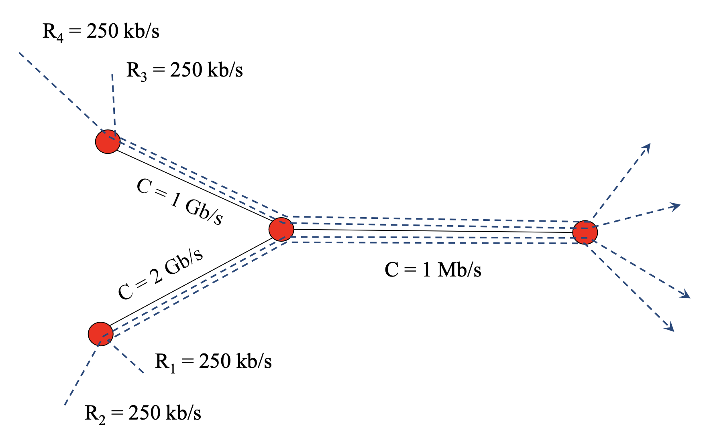
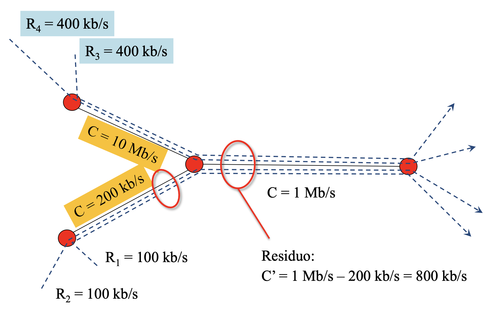